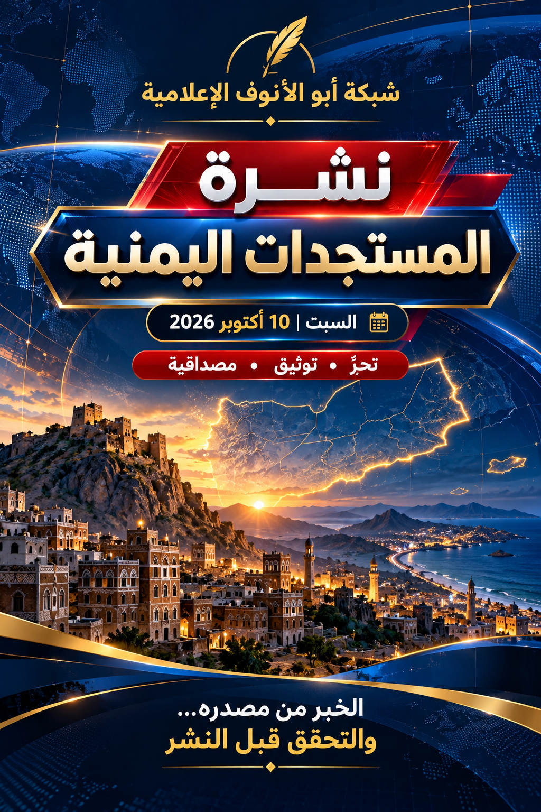

نشرة المستجدات اليمنية
شبكة أبو الأنوف الإعلامية — الخبر من مصدره.. والتحقق قبل النشر
النشرة المصوّرة


1. التصعيد الإقليمي
أفادت رويترز و«أسوشيتد برس» بأن هجمات استهدفت مطار الرياض وطائرة تابعة للخطوط السعودية يوم الخميس، وأعلنت السلطات السعودية مقتل ثلاثة أشخاص وإصابة آخرين. ونسبت تقارير الهجوم إلى الحوثيين الذين أعلنوا مسؤوليتهم، بينما لم تُسمِّ السلطات السعودية الجهة المنفذة في بيانها المنشور.
الحصيلة منسوبة إلى السلطات السعودية عبر وكالات أنباء2. التطورات الميدانية في اليمن
تتواصل المواجهات في محاور عدة، بينها تعز والساحل الغربي ومحيط باب المندب. وأشارت رويترز إلى أن تفاصيل السيطرة على بعض المناطق لم يتسنَّ التحقق منها بصورة مستقلة؛ لذلك لا تُعرض روايات التقدم أو الحسم الميداني كحقائق نهائية.
تفاصيل ميدانية متغيرة — التحقق المستقل غير مكتمل3. صنعاء والغارات المعلنة
أوردت «أسوشيتد برس» أن سكانًا أفادوا بسماع انفجارات في صنعاء. ونقلت الوكالة عن متحدث تابع لسلطات الحوثيين قوله إن ستة أشخاص أُصيبوا، بينهم طفل، وأشارت إلى أنها لم تتمكن من التحقق المستقل من بعض تفاصيل الرواية.
رواية منسوبة إلى مصدر محلي4. الوضع الإنساني والنزوح
بحسب تقرير لرويترز نقلًا عن المنظمة الدولية للهجرة، تجاوز عدد النازحين داخل اليمن 200 ألف شخص منذ مطلع سبتمبر 2026، مع تزايد الاحتياجات إلى الغذاء والمأوى والمساعدة الإنسانية.
رقم منسوب إلى تقرير إنساني منشور في 7 أكتوبرسجل التحقق التحريري
- موثق بالنشر: حصيلة الضحايا التي أعلنتها السلطات السعودية، كما نقلتها وكالتا Reuters وAP.
- منسوب: إعلان الحوثيين مسؤوليتهم عن الهجوم؛ يُنسب إلى الجهة التي أعلنته.
- قيد التحقق: بعض تفاصيل الغارات داخل اليمن، وتغيرات السيطرة الميدانية، وأرقام العمليات العسكرية.
- الصورة الرئيسية: تصميم توضيحي للنشرة، وليست صورة ميدانية من أحداث اليوم.
المصادر الأصلية والمتابعة
- Reuters — هجمات مطار الرياض وتصاعد الحرب، 9 أكتوبر 2026
- Associated Press — حصيلة هجوم مطار الرياض وانفجارات صنعاء، 9 أكتوبر 2026
- Reuters — النزوح في اليمن تجاوز 200 ألف منذ سبتمبر، 7 أكتوبر 2026
- الجزيرة — تغطية مستجدات اليمن
- صحيفة الأيام — أخبار عدن واليمن
تم إعداد هذا العدد وفق المواد المنشورة التي أمكن مراجعتها حتى صباح السبت 10 أكتوبر 2026. قد تتغير الوقائع مع ورود تحديثات جديدة.